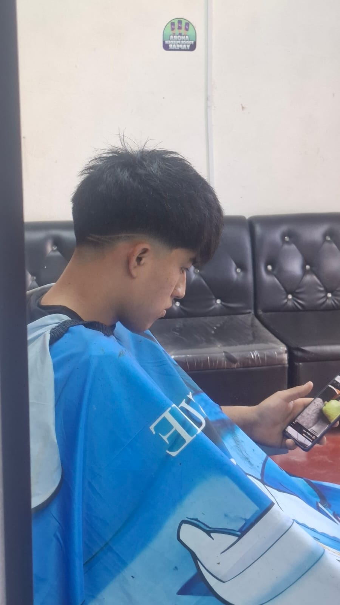

"Más que cortes, creamos familia"
Ofrecemos servicios de alta calidad para el cuidado masculino
Algunos de nuestros mejores trabajos

Reserva tu cita o consulta nuestros servicios
+51 970 134 565
Lunes a Sábado: 9:00 AM - 9:30 PM
Jr. San Martín de Porres 197, Pillco Marca, Huánuco, Perú